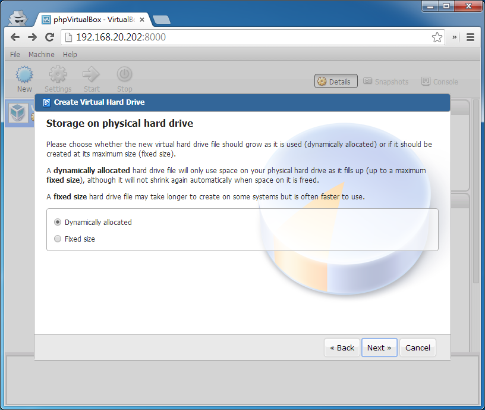

phpVirtualbox
8/Feb 2014
過年期間買了新的 PC 內裝(CPU, 主機板, 記憶體)
最近終於決定 OS 的架構了
- Ubuntu 12.04 x64
- ZFS
- Virtualbox
- Docker
32G RAM 的 PC ….hehehe
Ubuntu 選 LTS 版, 必免頻繁 Upgrade 的問題

ZFS, 實驗性質, 看看大量使用會不會有什麼鬼問題, 不過 ZFS 在 Ubuntu 感覺還是有點雷, 用預設的 properties 會狂吃記憶體, 傳檔案竟然會吃到 2x G, 目前把所有的硬碟 cache 選項關掉, 把壓縮關掉, 看起來還正常一點…>_<
Docker, 去年年底才知道的好東西, linux base 的 vm 之後都可以轉到 docker 跑了, 不過之前用的 shipyard 管理界面在改版之後變得有點討厭, 限定要用 shipyard agent 才能管理 docker, 目前只好回到 console 去管理了, 看看有沒有時間弄個簡易的 web 管理界面好了…





Virtualbox, 本來想試用 KVM + openstack 的, 但是搞了半天還是搞不定, 只好回到 virtualbox 了, 重點是, 發現了一個叫 phpvirtualbox 的 project, 可以不用裝 GUI 來看 virtualbox 的設定界面了, 大推!!